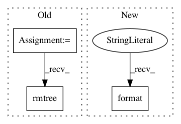

34df73c2d2d2a305efd438d7dcd9a01b3ed176f0,studio/tartifact_store.py,TartifactStore,put_artifact,#TartifactStore#Any#Any#Any#Any#,60
Before Change
.format(local_path, cache_dir))
if os.path.exists(cache_dir) and os.path.isdir(cache_dir):
shutil.rmtree(cache_dir)
pcp = subprocess.Popen(
["cp", "-pR", local_path, cache_dir],
stdout=subprocess.PIPE,
After Change
debug_str = "Copying local path {} to cache {}" \
.format(local_path, cache_dir)
if ignore_arg != "":
debug_str += ", excluding files in {}" \
.format(ignore_filepath)
self.logger.debug(debug_str)
util.rsync_cp(local_path, cache_dir, ignore_arg,
self.logger)
In pattern: SUPERPATTERN
Frequency: 3
Non-data size: 3
Instances
Project Name: studioml/studio
Commit Name: 34df73c2d2d2a305efd438d7dcd9a01b3ed176f0
Time: 2017-09-08
Author: jason.liang@sentient.ai
File Name: studio/tartifact_store.py
Class Name: TartifactStore
Method Name: put_artifact
Project Name: philipperemy/deep-speaker
Commit Name: 93799ac3f4183b6dcd55cccf9655ae6e4c80849b
Time: 2017-12-02
Author: daniel-schreiber@gmx.de
File Name: utils.py
Class Name:
Method Name: create_dir_and_delete_content
Project Name: okfn-brasil/serenata-de-amor
Commit Name: c4be1d6929eee29717435a07efa11e7e6c2a733a
Time: 2017-05-09
Author: renanfonseca@gmail.com
File Name: src/fetch_tse_data.py
Class Name:
Method Name: